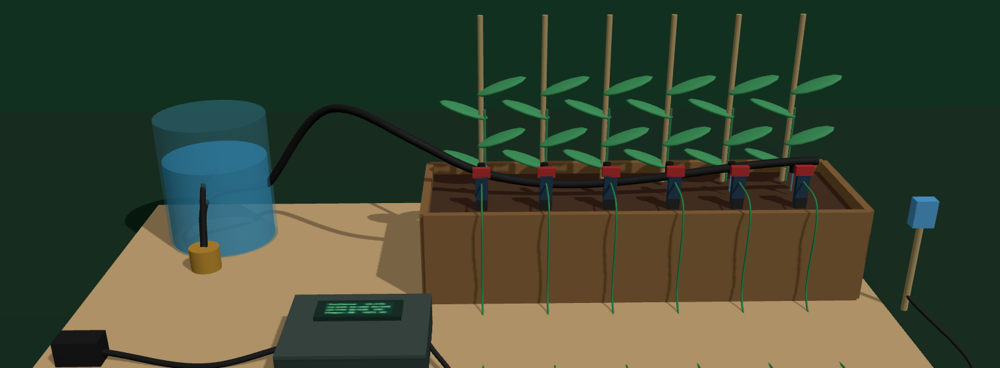

Fakultas TeknikUniversitas Tidar
Capstone Design 2026
Irri
Sense
Sistem Penyiraman Tetes Otomatis pada Perkebunan Vanili Berbasis IoT
IoT-Based Automatic Drip Irrigation System for Vanilla Plantations

Rancangan prototipe dalam 3D, bukan foto alat
60–80%
kelembapan tanah ideal untuk vanili
Disiram menurut kira‑kira, bukan menurut kebutuhan tanah
Penyiraman manual memboroskan air, dan kelembapan tanah naik-turun tak menentu. Padahal vanili tumbuh baik bila tanahnya 60–80% lembap.
Sensor membaca tanah, ESP32 memutuskan, pompa menyiram
Tanah di bawah 60%: pompa menyala. Tanah mencapai 80%: pompa mati.
Semua titik tanah terpantau di layar
Ilustrasi tampilan dashboard dengan data contoh
<2 detikdelay monitoring
±5%akurasi sensor
30%target hemat air
| Faizal Deshta Nugraha | 2340506065, ketua | Muhamad Rifa'i | 2320501057 |
| Fahmi Aulia Mustofa | 2310508005 | Vincensius A. M. Prabaswara | 2320507022 |
| Ilhan Ha'is Munjazi | 2340501119 | | |
Dosen pembimbing: Kukuh Trisna Pambudi, S.T., M.Eng.